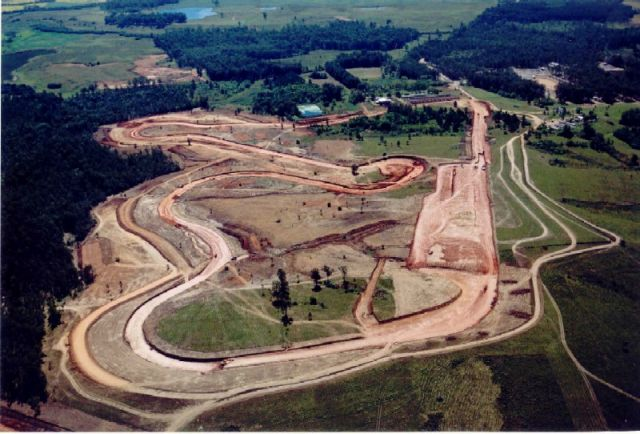
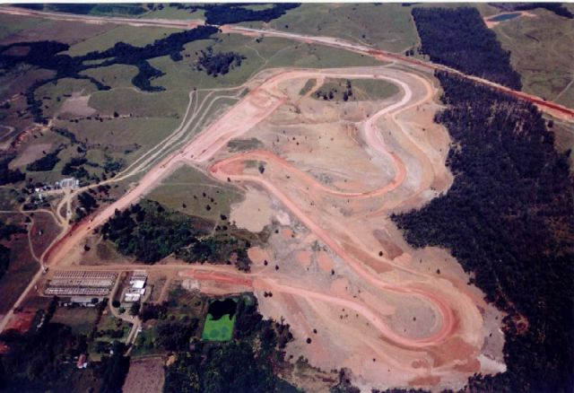
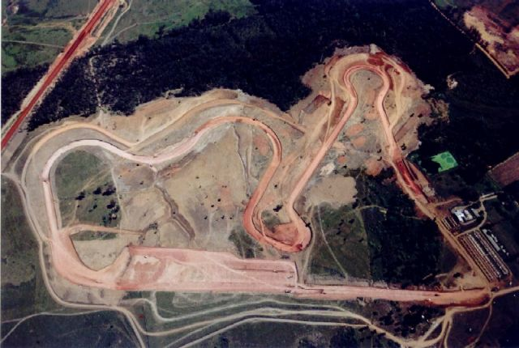
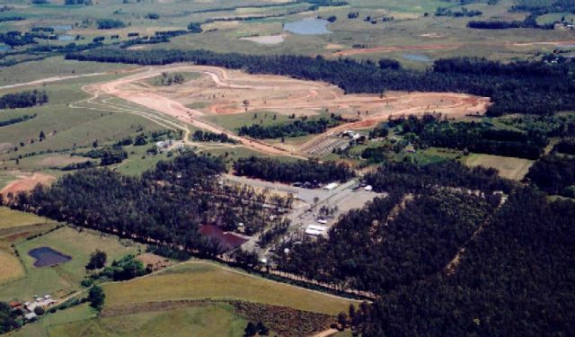
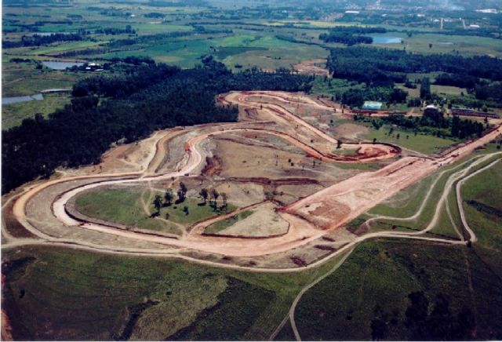
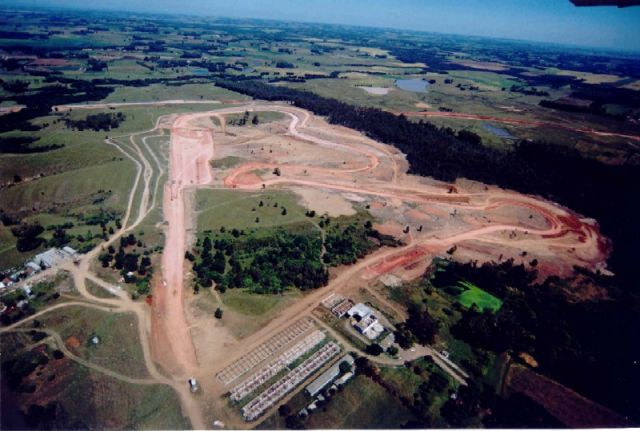

Santa Cruz do Sul, Brazil
Type: Permenant Road Course Photographs Taken: June 2003
Aerial photographs of circuit under construction






Photographs kindly supplied by Leomar Teichmann. Reproduced here with kind permission.